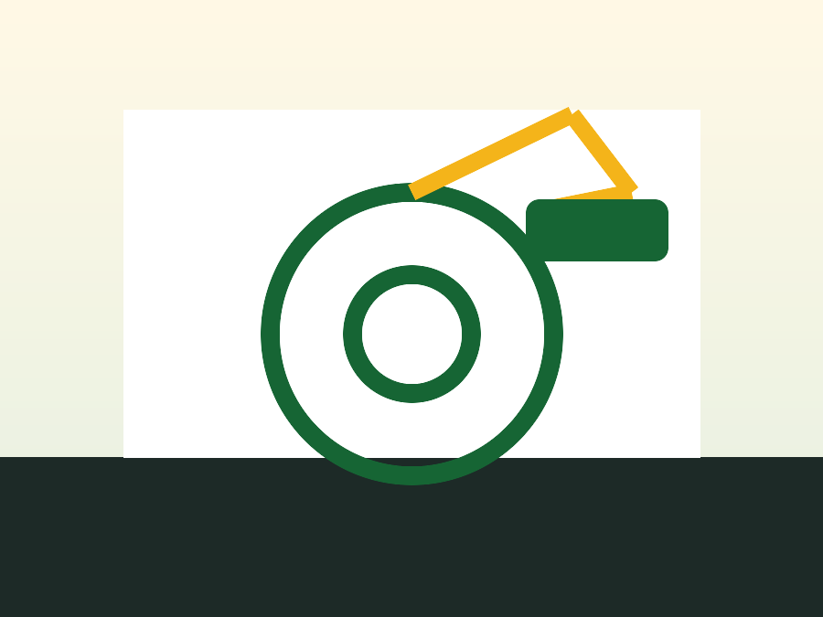
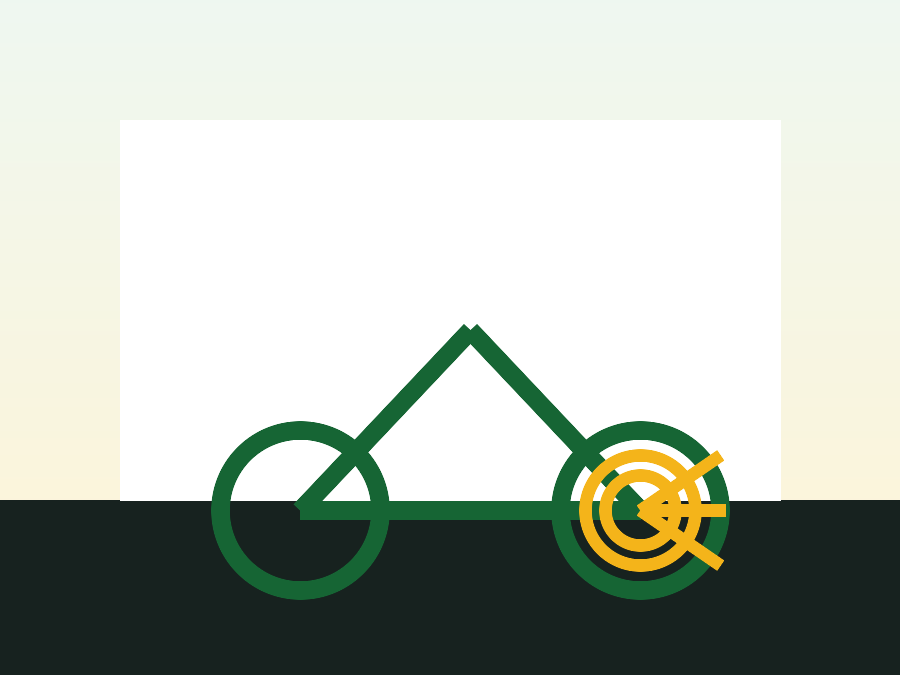

Mantenimiento general
Limpieza técnica, torque de tornillería, centrado básico, lubricación y ajuste completo.
Desde $120.000 COPTaller
Diagnóstico, presupuesto y mantenimiento para que tu bicicleta vuelva a rodar suave, precisa y confiable.
Limpieza técnica, torque de tornillería, centrado básico, lubricación y ajuste completo.
Desde $120.000 COP
Alineación, purgado hidráulico, cambio de pastillas, guayas y calibración de maniguetas.
Desde $45.000 COP
Ajuste de cambios, cambio de cadena, cassette, platos y revisión de desgaste.
Desde $55.000 COPProceso
Recibimos tu bici, revisamos puntos críticos, priorizamos seguridad y te enviamos un resumen con opciones de reparación.